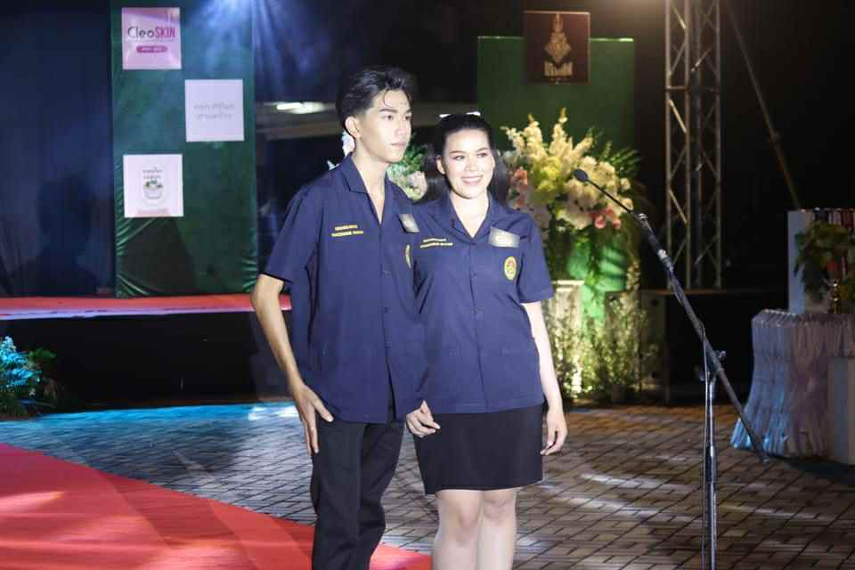
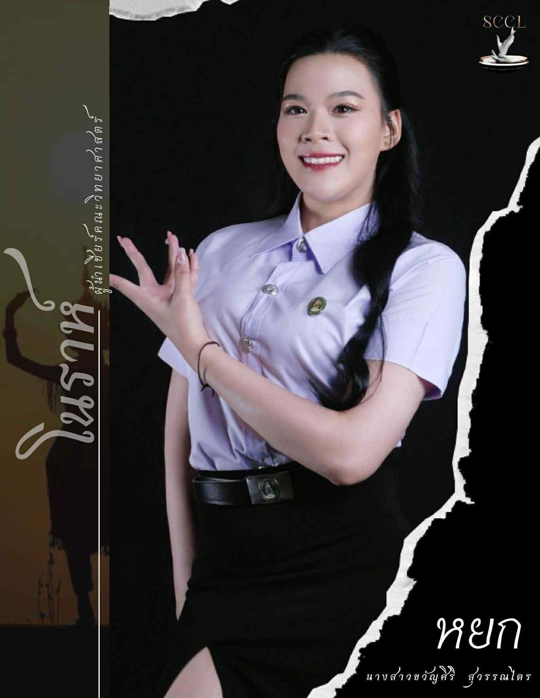
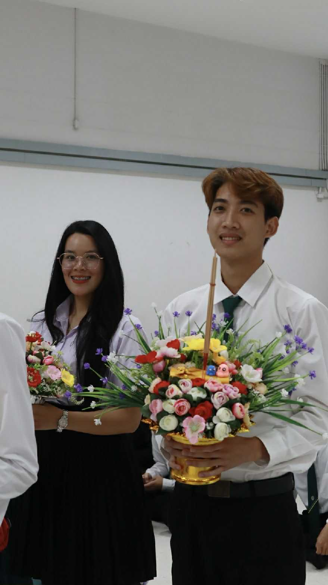
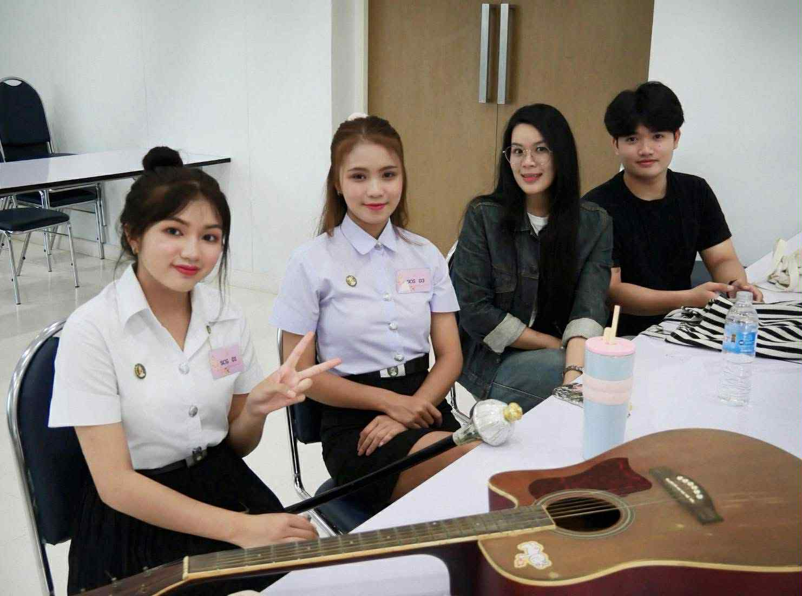
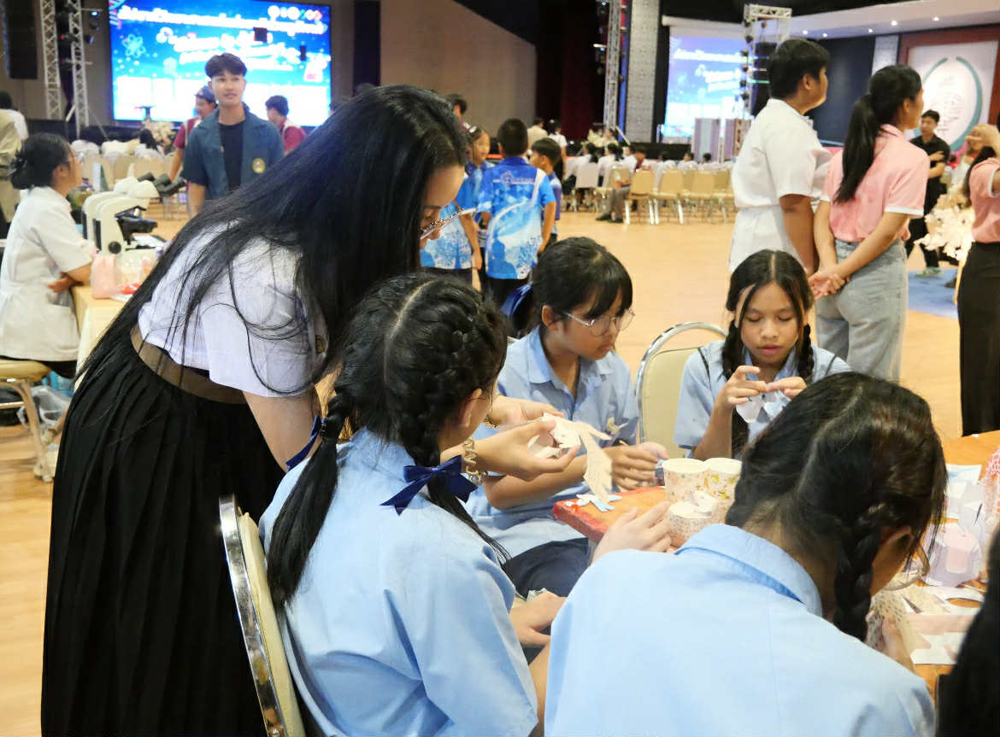
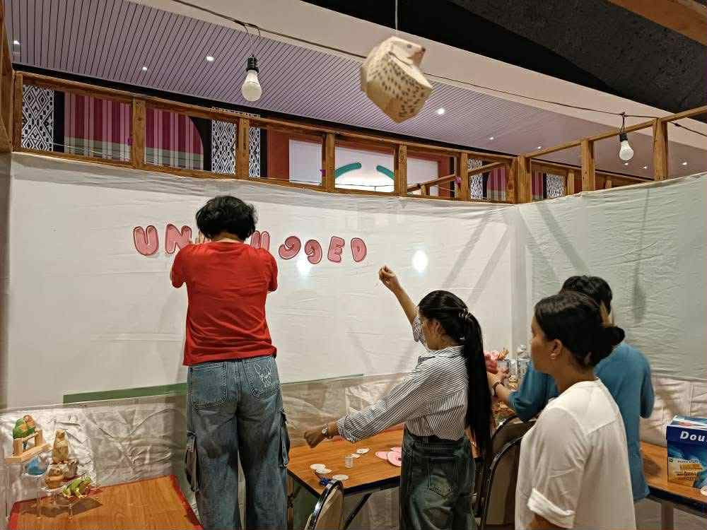
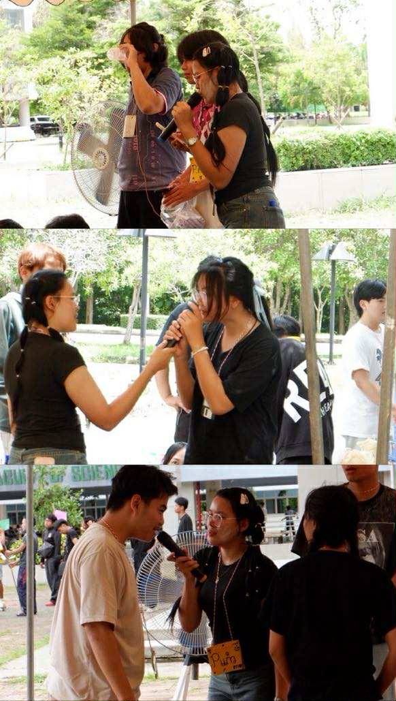
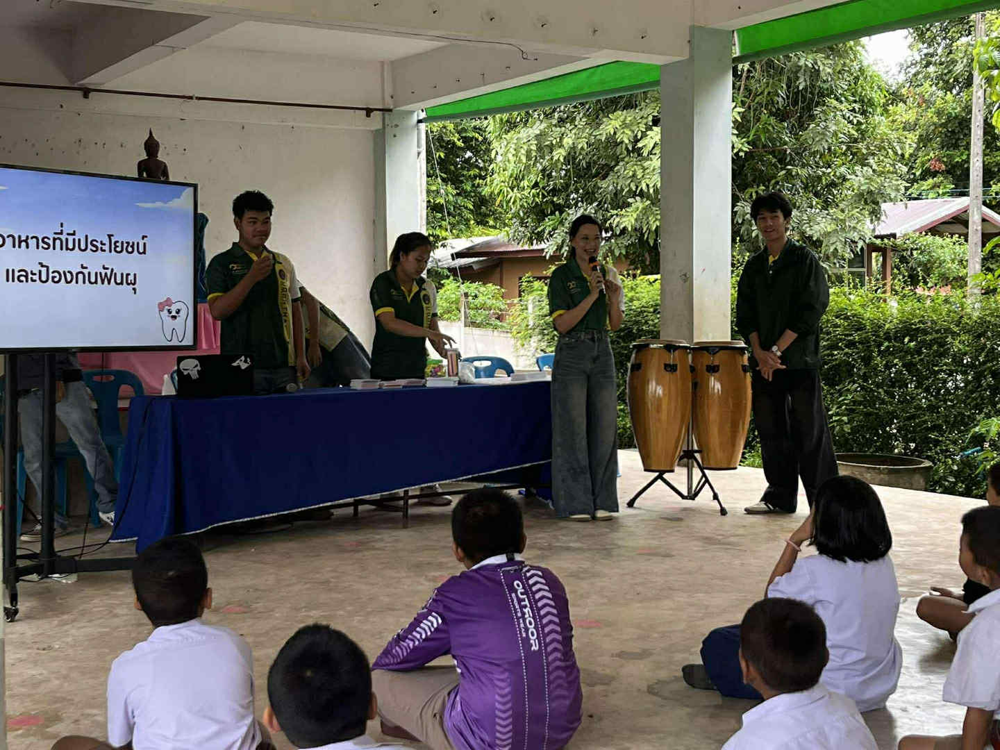
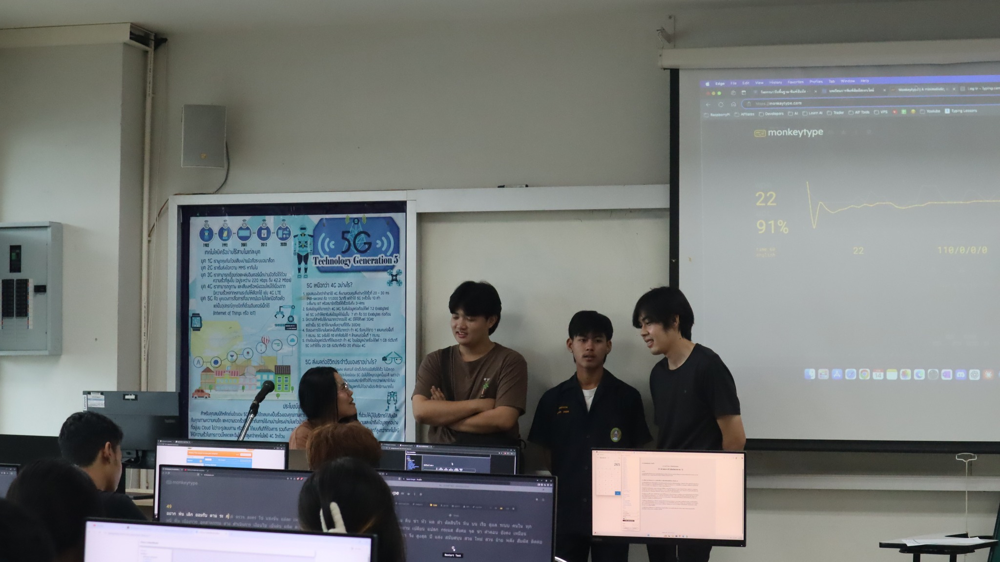

กิจกรรมและผลงานอื่น ๆ (Activities / Achievements)
- ลงประกวด Ambassador ปี 2567 
- เป็นผู้นำเชียร์ 2567 
- เป็นตัวแทนถือพานไหว้ครู 2568 
- เป็นพี่เลี้ยง Ambassador ปี 2568 
- จัดซุ้ม/ดูแลซุ้มวันวิทยาศาสตร์ 2567  
- จัดกิจกรรม PAPER MODEL 2567
- เป็นพิธีกร ในวันรับน้อง 2568 
- เป็นพิธีกร ลงพื้นที่ โรงเรียนบ้านดอนกลอย 2568 
- อบรมพิมพ์ดีด ของน้องปี1 2568 